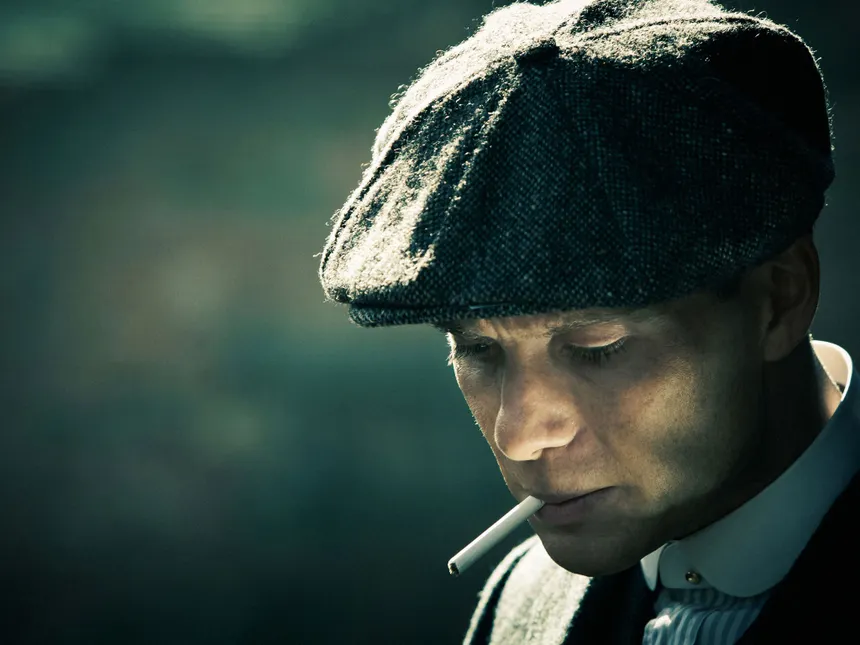

Aquatic Science student
I study water and what lives in it, and I like doing things properly.
I'm a student at Jomo Kenyatta University of Agriculture and Technology (JKUAT), studying aquatic science. This page is a short tour of who I am: what I study, what I do when I'm not studying, and what I watch and listen to.
I'm drawn to lakes, rivers, fish farms and the coast, and to the questions about how healthy water keeps people fed. I like fieldwork, I like data, and I like explaining what I find in plain words.
Outside class I'm a fan of period drama, good music and long conversations about both.
Raising fish and other water animals for food: ponds, tanks, feed and keeping stock healthy.
Measuring oxygen, temperature, pH and nutrients, and reading what the numbers say about a water body.
How fish populations live, grow and are managed, and how lakes and rivers work as ecosystems.
The one I come back to. The suits, the slow walks, the speeches that make a room go quiet. I watch it for the writing as much as the style, and I notice that Tommy always did the planning first.
I always have something playing while I study. My current playlist is just below.
Walks, water and open space. It's the best way I know to clear my head.
Birmingham, 1919 onwards. Family, loyalty and a lot of smoke. Start from the first episode.
A documentary series about the oceans. It's what I'd show anyone who asks why I study water.
